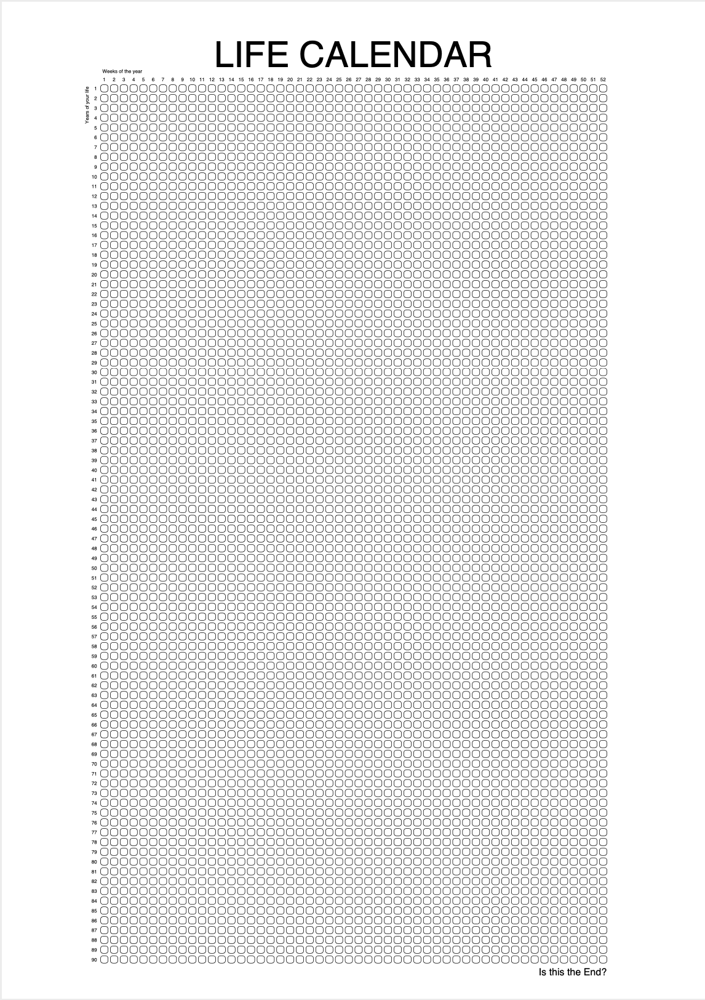

Lisp Project of the Day
cl-pdf
You can support this project by donating at:


Or see the list of project sponsors.
cl-pdf
| Documentation | 🥺 |
| Docstrings | 😀 |
| Tests | 🥺 |
| Examples | 😀 |
| RepositoryActivity | 🥺 |
| CI | 🥺 |
This is the library for PDF generation and parsing.
Today I'm too lazy to provided step by step examples, but I have a real task to do with this library.
Some time ago I've read the article about productivity which recommended to print a "life calendar". This calendar should remind you: "The life is limited and the time's price is high."
The calendar is a grid where every box is one week of you life. The article suggested to buy a poster with the calendar, but I don't want to wait for a parcel with the poster! I want to print it now!
And here is where cl-pdf comes on the scene!
I wrote this simple function to generate the poster of A1 format:
(defun render (&optional (filename "life.pdf"))
(flet ((to-ppt (size-in-mm)
(/ size-in-mm 1/72 25.4)))
(let* ((width (to-ppt 594)) ;; This is A1 page size in mm
(height (to-ppt 841))
(margin-top (to-ppt 70))
(margin-bottom (to-ppt 30))
(span (to-ppt 2))
(year-weeks 52)
(years 90)
(box-size (/ (- (- height (+ margin-top margin-bottom))
(* span (1- years)))
years))
(boxes-width (+ (* box-size year-weeks)
(* span (1- year-weeks))))
(boxes-height (+ (* box-size years)
(* span (1- years))))
;; horizontal margin depends on box size,
;; because we need to center them
(margin-h (/ (- width boxes-width)
2))
(box-radius (/ box-size 3))
(helvetica (pdf:get-font "Helvetica")))
(pdf:with-document ()
(pdf:with-page (:bounds (rutils:vec 0 0 width height))
;; For debug
;; (pdf:rectangle margin-h margin-bottom
;; boxes-width
;; boxes-height
;; :radius box-radius)
(loop for year from 0 below years
do (loop for week from 0 below year-weeks
for x = (+ margin-h (* week (+ box-size span)))
for y = (+ margin-bottom (* year (+ box-size span)))
do (pdf:rectangle x y box-size box-size :radius box-radius)))
;; The title
(pdf:draw-centered-text
(/ width 2)
(+ margin-bottom
boxes-height
;; space between text and boxes in mm
(to-ppt 15))
"LIFE CALENDAR"
helvetica
;; font-size in mm
(to-ppt 30))
;; Labels for weeks
(let ((font-size
;; We want labels to be slightly smaller than boxes
(* box-size 2/3)))
(pdf:draw-right-text
(+ margin-h
(/ box-size 4))
(+ margin-bottom
boxes-height
;; space between text and boxes in mm
(to-ppt 10))
"Weeks of the year"
helvetica
font-size)
(loop for week below year-weeks
do (pdf:draw-centered-text
(+ margin-h
(/ box-size 2)
(* week (+ box-size span)))
(+ margin-bottom
boxes-height
;; space between text and boxes in mm
(to-ppt 3))
(rutils:fmt "~A" (1+ week))
helvetica
font-size))
;; Labels for years
(pdf:with-saved-state
(pdf:translate
(- margin-h
(to-ppt 10))
(- (+ margin-bottom
boxes-height)
(/ box-size 4)))
(pdf:rotate 90)
(pdf:draw-left-text
0 0
"Years of your life"
helvetica
font-size))
(loop for year below years
do (pdf:draw-left-text
(- margin-h
;; space between text and boxes in mm
(to-ppt 3))
(+ margin-bottom
(/ box-size 4)
(* year (+ box-size span)))
(rutils:fmt "~A" (- years year))
helvetica
font-size))
;; The Question.
(pdf:draw-left-text
(- width margin-h)
(- margin-bottom
(to-ppt 10))
"Is this the End?"
helvetica
(* font-size 2))
(pdf:close-and-stroke)))
(pdf:write-document filename)))))Here is how result will look like:

The PDF can be downloaded here.
This program demonstrates a few features of cl-pdf:
- ability to set page size;
- text drawing and rotation;
- font manipulation.
There are a lot more features but all of them aren't documented, only several examples :(
GitHub shows 4 forks with some patches. And some of them are turned into a pull-request, but maintainer is inactive on the GitHub since 2019 :(
Brought to you by 40Ants under